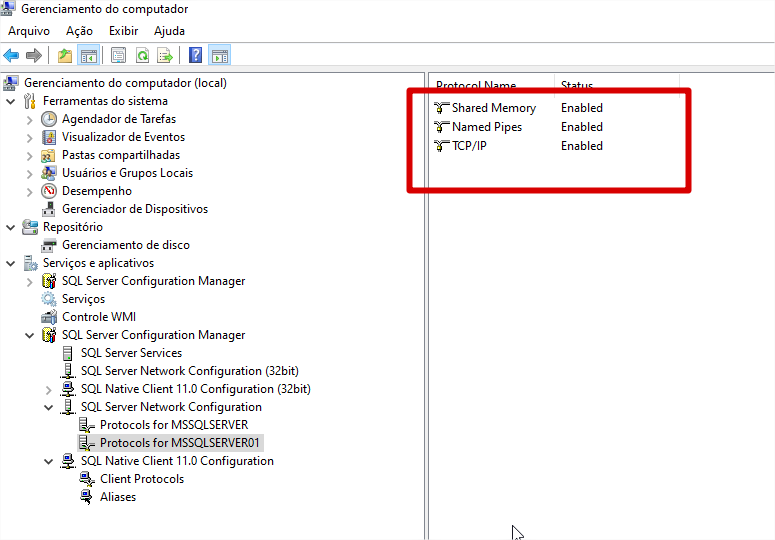
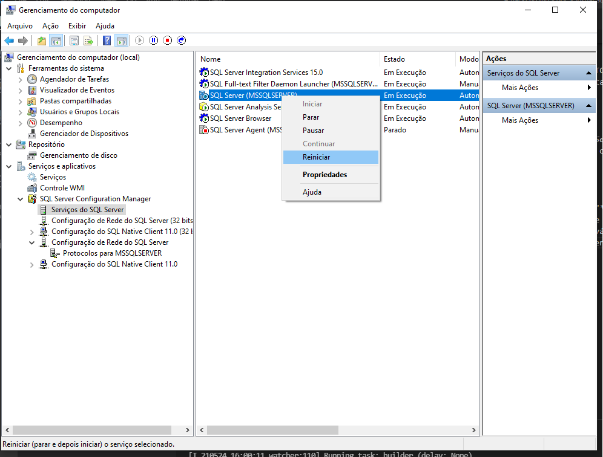
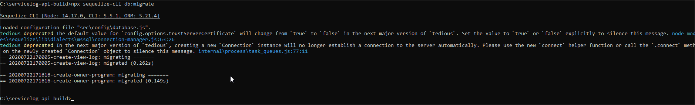
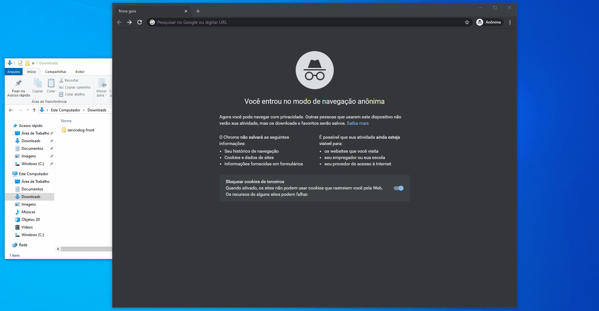
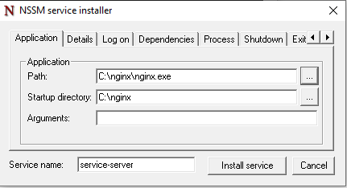

Serviço
Serviço utilizado para gravação e consulta dos logs dos testes realizados pelo TIR.
O pacote servicelog necessita do pacote do Node.js versão v12+.
Configuração
Clique aqui e baixe o arquivo zip.
Após a instalação procurar na pasta raiz do projeto o arquivo .env e realizar a configuração do serviço conforme os parâmetros abaixo.
-
database - A Tag "DB" é responsavél pela comunicação do banco e possui os seguintes parâmetros:
- TYPE - Tipo de banco de dados que serão armazenados os logs de execuções, podendo receber como parâmetros
mssqlpara Microsoft SQL ousqlitepara SQLITE. - STORAGE - Apenas caso a opção de banco seja SQLITE. Representa o caminho do banco que por default fica na pasta "db" do projeto:
./db/dashboard.sqlite. - INSTANCENAME - Nome da Instância do banco de dados.
- HOST - Ip do servidor que está o banco de dados.
- USERNAME - Usuário do banco de dados.
- PASSWORD - Senha do usuário do banco de dados.
- DATABASE - Nome do banco de dados criado para receber os registros.
- TYPE - Tipo de banco de dados que serão armazenados os logs de execuções, podendo receber como parâmetros
-
PATH_SERVER - Caminho da pasta onde seram enviados os arquivos json caso o servidor não consiga gravar o registro no banco de dados.
-
PATH_PROCESSED - Pasta de arquivos que já foram processados quando o servidor apresentar uma contigência.
-
APP_PORT - Porta que será inicializado a aplicação.
-
SCHEDULE - Nessa opção é configurado qual será frequência de verificação de arquivos jsons da pasta configurada no "pathServer". Ela possui uma sintaxe abaixa
Campos permitidos
# ┌────────────── segundos (optional)
# │ ┌──────────── minutos
# │ │ ┌────────── horas
# │ │ │ ┌──────── dias do mês
# │ │ │ │ ┌────── mês
# │ │ │ │ │ ┌──── dia da semana
# │ │ │ │ │ │
# │ │ │ │ │ │
# * * * * * *
Valores permitidos
| campos | valores permitidos |
|---|---|
| segundos | 0-59 |
| minutos | 0-59 |
| hora | 0-23 |
| dia do mês | 1-31 |
| mês | 1-12 (or names) |
| dia da semana | 0-7 (nomes ou números, 0 ou 7 domingo à sábado) |
- No padrão está da seguinte forma:
* 7,12,18,23 * * *- Dessa forma será executado o serviço as 7hrs, 12hrs, 18hrs e 23hrs todos os dias.
Instalação
Após a instalação procurar na raiz do projeto a pasta /scripts-bats e executar os scripts na sequência abaixo e em modo de administrador.
- install.bat - Descompactar os pacotes do npm.
- service-mode.bat - Instalação a api em modo de serviço.
- run.bat - Inicializa o serviço.
Em caso de necessidade poderá desligar o serviço com o bat abaixo.
- stop.bat - Desliga o serviço
Observações
Caso utilize o Microsoft SQL Server será necessario habilitar a comunicação TCP e ativar o SQL Server Browser (responsável por escutar as solicitações de entrada de recursos do Microsoft SQL Server e fornecer informações sobre as instâncias do SQL Server instaladas no computador) conforme o passo a passo a seguir:
Habilitar portas TCP do Banco
- Pressione Windows key + R
- Na caixa de dialogo digite Digite compmgmt.msc
- Navegue por "Serviços e aplicativos > SQL Server Configuration Manager > SQL Server Network Configuration" e selecione a mesma instancia do banco informado no arquivo
.env - Após selecionada a instância, no menu a direita clique com o botão direito sob o protocolo e habilite faça isso para todas as opções: 
Habilitar serviço SQL Server Browser
- Dentro do menu lateral "SQL Server Configuration Manager" selecione a opção "SQL Server Services"
- No menu a direita clique com o botão direito sob a opção SQL Server Browser e clique em "inciar"
Talvez a opção "iniciar" não esteja disponível, nesse caso, com o botão direito vá em "propriedades" entre na aba "serviço" e na caixa "modo inicial" selecione a opção "Automático"
- Após realizar todas as alterações, ainda na opção "SQL Server Services" do menu lateral, reinicie o serviço do banco 
Criação das tabelas
Por fim será necessario criar as tabelas através de um comando conforme a seguir:
- Abra um cmd no diretorio raiz dos arquivos
- Execute o comando
npx sequelize-cli db:migrate
INSTALAÇÃO DO PORTAL
- Esse Portal tem como intuito exibir os gráficos com execuções que ocorrerão nos ciclos.
- Clique aqui e baixe o arquivo zip.
!!! aviso Após baixar o pacote com o portal deve ser selecionado um servidor web de sua preferência para colocar seu portal, como recomendação neste exemplo usaremos o Nginx, mas fique a vontade para selecionar o que esteja mais acostumado.
Instalação e configuração do Nginx:
Entre na página Nginx e na parte de download e selecione o pacote conforme seu sistema operacional. Após isso deve seguir os seguintes passos:
- Descompactar o nginx no caminho desejado.
- Abrir o arquivo "conf/nginx.conf"
-
Dentro da chave
serverinclua trecho a seguir:listen 8066; server_name localhost; -
Faça o mesmo para a chave
location /com o código abaixo:root html; index index.html index.htm; try_files $uri $uri/ /index.html;Sua alteração ficará algo semelhante ao seguinte:

-
Copie os arquivos do portal para a pasta /html
-
Por fim na pasta raiz do nginx e execute o
nginx.exe
Veja um exemplo a seguir:

Observações
A porta do web server deve ser a mesma
APP_PORTconfigurada arquivo .env. Nesse caso fica no arquivo html/config/appConfig.json
Nginx como serviço do windows
Para definir o nginx como um serviço do windows siga o seguinte procedimento:
- Na raiz do projeto vá até o diretório "/scripts-bats/nginx/"
- Execute o
Install-service-server.batem modo admnistrador. - No campo "Path" defina o executavel do nginx e no campo "Startup directory" defina o local onde se encontra o executavel.
 - Clique em "install service" e aguarde finalizar.
- Pronto agora o que serviço ja está instalado é só roda-lo com
Run-service-server.bat